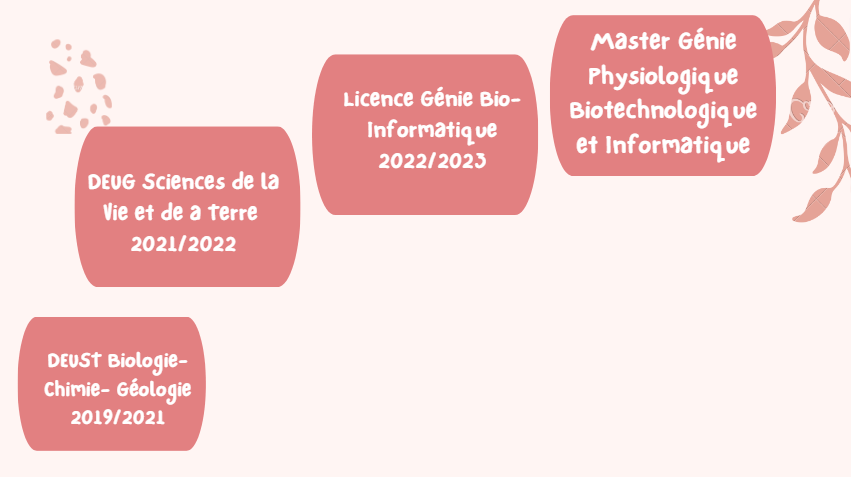

Oumaima EL ARBAOUI
Étudiante en Master GPHY, en quête d'une opportunité de stage enrichissante.
Diplômes et Formation
Oumaima EL ARBAOUI, actuellement étudiante en Master Génie Physiologique Biotechnologique et Informatique (GPHY) depuis septembre 2023 à l'Université de Poitiers, France, poursuit une formation académique approfondie en sciences et technologies. Avant cela, j’ai complété ma Licence 3 en Génie Bio-Informatique (GBI) à la même université, de septembre 2022 à mai 2023, enrichissant ses connaissances en biologie informatique. Ma formation antérieure comprend un DEUG en Sciences de la Vie et de la Terre (SVT) obtenu à l'Université d'Avignon entre septembre 2021 et mai 2022, et un DEUST en Biologie-Chimie-Géologie (BCG) de la Faculté des Sciences et Techniques (FST) à Fès, Maroc, achevé entre septembre 2019 et mai 2022.
Stages
Mon parcours de stage a débuté chez RADEETA à Taza, Maroc, de avril à juillet 2021, j'ai réalisé des analyses physico-chimiques et bactériologiques de l'eau, effectué des échantillonnages et travaillé sur la gestion des données, ce qui a aiguisé mes compétences en analyse de données et en collaboration d'équipe. Ensuite, au CNRS et à l'Université de Poitiers, de mai à juin 2023, j'ai contribué au développement de PLAViMop, un logiciel d'apprentissage profond, en programmant en R et Python, en effectuant des tests et en rédigeant un cahier de validation. Enfin, lors de mon stage chez AXA à Taza, de juin à Août 2023, j'ai été en charge du test et de la validation du logiciel RECA, un outil essentiel pour la gestion des réclamations clients. J'ai effectué des tests manuels et automatisés avec JUnit, participé aux recettes et tests utilisateurs, et rédigé un cahier de validation.
Expériences professionnelles
Mon expérience professionnelle s'étend sur divers rôles significatifs. En tant qu'Animatrice Périscolaire à l'Ecole Elémentaire Georges Brassens de Poitiers, Nouvelle-Aquitaine, France, de septembre 2022 à août 2023, j'ai joué un rôle crucial dans l'organisation d'activités périscolaires éducatives et créatives. J'ai collaboré étroitement avec les enseignants et les parents pour créer un environnement stimulant, planifié des activités, développé des stratégies de gestion de groupe, et utilisé mes compétences en communication pour interagir efficacement avec les enfants, les parents et le personnel éducatif. Puis, en tant qu'Agent de Service Civique au Lycée Professionnel Saint-Vincent de Paul à Avignon, de novembre 2021 à juin 2022, j'ai assisté les élèves dans l'utilisation des ordinateurs, géré la base de données BCDI et animé des ateliers de soutien scolaire, améliorant ainsi mes compétences en communication, gestion de projet et gestion électronique des documents. De plus, j'ai travaillé au Futuroscope, où j'ai acquis une expérience précieuse dans le domaine du divertissement et de la gestion de l'accueil des visiteurs, développant davantage mes compétences en service client et en gestion opérationnelle.
Langues
Je suis bilingue en français et en arabe, je possède un niveau intermédiaire en anglais et des compétences de base en allemand et en espagnol. Cette polyvalence linguistique témoigne de ma capacité à communiquer dans un environnement international diversifié.
Compétences
Je maîtrise plusieurs langages de programmation, dont Ada, Python, R et Java, et est familiarisée avec des outils bioinformatiques tels que Cytoscape et Galaxy. Je possède également des compétences en édition de documents avec Office et LaTeX, et en systèmes d'exploitation, notamment Linux, Bash, Git et Powershell. Sur le plan personnel, je me distingue par ma capacité de projection, mon autonomie et mon esprit d'initiative.